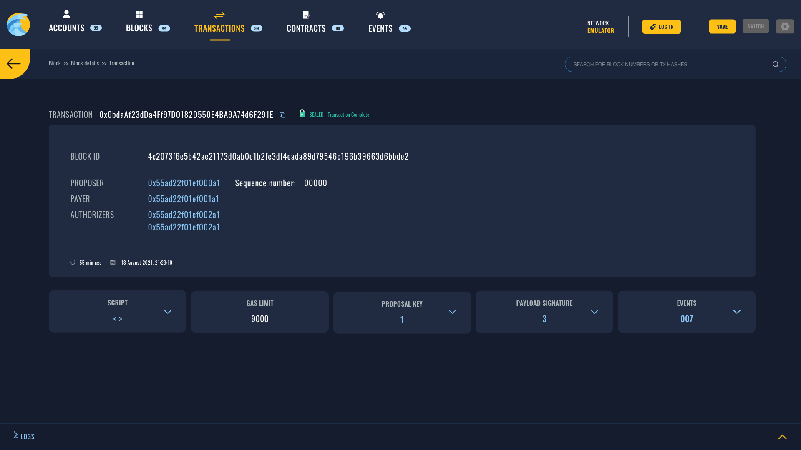
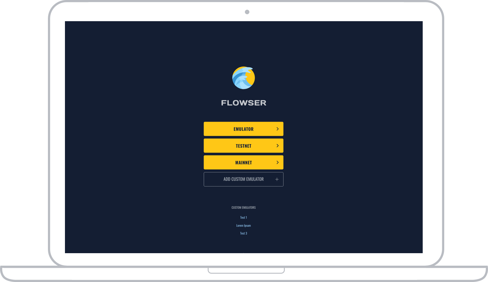

Flow GUI Browser
Easily start your local Flow network and inspect the state. Flowsers is
your development inspection tool giving you confidence your smart
contracts are behaving as intended and it brings the world of
transactions and blocks in beautiful colors making it easy to
understand.

Flowser key benefits
Flowser offers a lot of functionalities that gives you power to inspect
any FLow network. But it doesn't stop here, Flowser is not just another
scanner tool, it allows you to manage your local Flow network and
inspect its state.
Inspect Storage
You can use Flowser to inspect account storage, it visually gives
you access to see what is stored in the account.
Browse Network
Browse transactions, blocks, contracts, accounts and emulator
logs all from single place and in real time.
Manage Emulator
Managing emulator has never been easier, you can set all
properties on the emaultor and save it for later.
Wallet Integration
Flowser contains integration with dev wallet and uses FCL to
interact with the
network.
START FLOWSING
NOW
FLOWSER WILL GET YOU THERE
Whether you are starting a complex project or just a simple test Flowser
will make your development feel smooth and give you confidence in your
code. Always expanding set of features will allow you to test different
parts of your application, see if storage is updated as intended, see if
your tests ran successfully, see if the FCL integration is working and
your dev wallet is behaving, all that and more.
